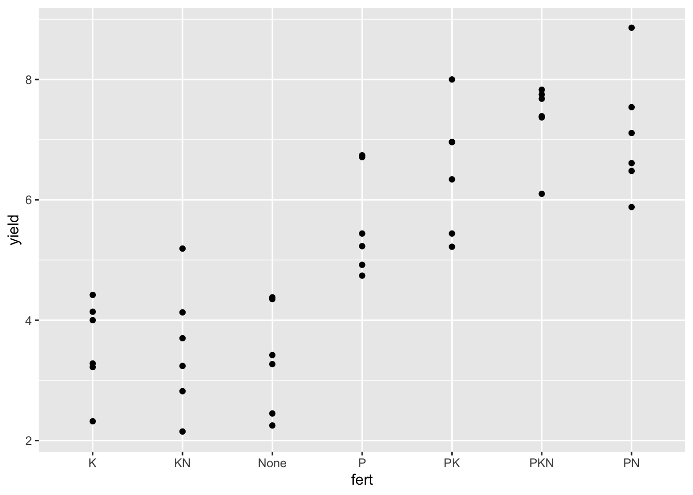
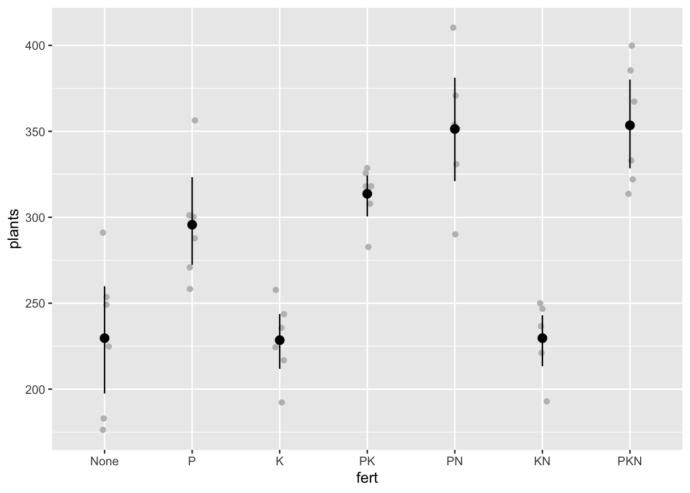

Dados de experimentos
Resposta contínua
Em experimentos com delineamentos experimentais em que se mede uma variáveld e natureza contínua, nosso interesse é estimar uma medida de tendência central e variabiliade nas unidades experimentais. Com isso é possível aplicar um teste inferencial, calcular a medida do efeito, etc. visando a comparação entre os tratamentos. Vamos trabalhar com o conjunto de dados cochran.beets do pacote agridat, criando o dataframe beets.
library(agridat)
beets <- cochran.beets
beetsComo podemos ver acima, o conjunto bem quatro variáveis, uma que representa o tratamento, o bloco e duas variáveis resposta que são a produtividade e o número de plantas por parcela. Vamos visualizar os dados de todas as repetições por tratamento.
beets %>%
ggplot(aes(fert, yield))+
geom_point()
Podemos notar que parece que há um número diferente de blocos por tratamento. Isso pode ser verdade ou então porque usamos geom_point() que faz com que valores iguais fiquem sobrepostos. Vamos usar geom_jitter() para adicionar um ruído e fazer com que os pontos sejam deslocados na horizontal apenas. Abaixo confirmamos que há realmente seis blocos por tra
beets %>%
ggplot(aes(fert, yield))+
geom_jitter(width = 0.1)Os tratamentos estão ordenados alfabeticamente, como padrão. Podemos alterar para ordenar da maior para a maior produtividade, conforme vimos anteriormente usando reorder() no elemento x, ou então definindo manualmente a ordenação. Abaixo uma forma simples de definir a ordem dos níveis iniciando pelo tratamento testemunha, seguido dos tratamentos com um, dois ou três macroelementos em combinação.
beets$fert <- factor(beets$fert,
levels = c("None",
"P",
"K",
"PK",
"PN",
"KN",
"PKN"))Refazendo o gráfico e definindo o limite inferior que tem um baseline natural.
beets %>%
ggplot(aes(fert, yield))+
geom_jitter(width = 0.05)+
ylim(0,10)+
labs(y = "Produtividade")beets %>%
ggplot(aes(fert, yield))+
geom_jitter(width = 0.05, color = "gray")+
stat_summary(fun.data = mean_cl_boot )beets %>%
ggplot(aes(fert, plants))+
geom_jitter(width = 0.05, color = "gray")+
stat_summary(fun.data = mean_cl_boot )
library(ggthemes)##
## Attaching package: 'ggthemes'## The following object is masked from 'package:cowplot':
##
## theme_mapbeets %>%
ggplot(aes(plants, yield, size = fert, color = fert))+
geom_point()+
scale_color_colorblind()+
labs(y = "Produtividade", x = "Numero de plantas", title ="Yield and number of plants", subtitle = "Sugarbeet fertilizer experiment" , caption = "Fonte: George Snedecor (1946)")## Warning: Using size for a discrete variable is not advised.